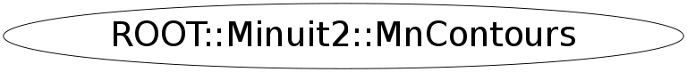

Function Members (Methods)
public:
| ~MnContours() | |
| ROOT::Minuit2::ContoursError | Contour(unsigned int, unsigned int, unsigned int npoints = 20) const |
| ROOT::Minuit2::MnContours | MnContours(const ROOT::Minuit2::MnContours&) |
| ROOT::Minuit2::MnContours | MnContours(const ROOT::Minuit2::FCNBase& fcn, const ROOT::Minuit2::FunctionMinimum& min) |
| ROOT::Minuit2::MnContours | MnContours(const ROOT::Minuit2::FCNBase& fcn, const ROOT::Minuit2::FunctionMinimum& min, unsigned int stra) |
| ROOT::Minuit2::MnContours | MnContours(const ROOT::Minuit2::FCNBase& fcn, const ROOT::Minuit2::FunctionMinimum& min, const ROOT::Minuit2::MnStrategy& stra) |
| vector<std::pair<double,double> > | operator()(unsigned int, unsigned int, unsigned int npoints = 20) const |
| const ROOT::Minuit2::MnStrategy& | Strategy() const |
Class Charts
{kind=link}
{kind=link}
{kind=link}
{kind=link}

Function documentation
MnContours(const ROOT::Minuit2::FCNBase& fcn, const ROOT::Minuit2::FunctionMinimum& min)
construct from FCN + Minimum
{} MnContours(const ROOT::Minuit2::FCNBase& fcn, const ROOT::Minuit2::FunctionMinimum& min, unsigned int stra)
construct from FCN + Minimum + strategy
{} MnContours(const ROOT::Minuit2::FCNBase& fcn, const ROOT::Minuit2::FunctionMinimum& min, const ROOT::Minuit2::MnStrategy& stra)
construct from FCN + Minimum + strategy
{}std::vector<std::pair<double,double> > operator()(unsigned int , unsigned int , unsigned int npoints = 20) const
ask for one Contour (points only) from number of points (>=4) and parameter indeces